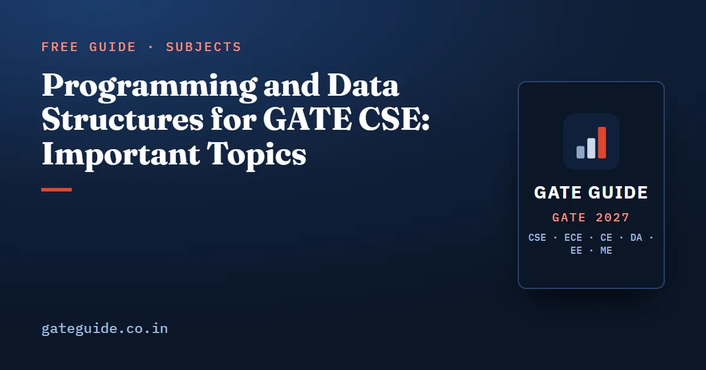

Programming and Data Structures for GATE CSE: Important Topics

The most important Programming and Data Structures (PDS) topics for GATE CSE 2027 are C pointer and array tracing, recursion tracing, binary search trees and binary heaps. Analysts place PDS at around 10 marks a paper, and most of those marks now come as numerical-answer questions where you trace code or an array by hand. The subject rewards careful tracing more than theory.
In this guide
Key takeaways
- The PDS syllabus is unchanged for 2027: C, recursion, arrays, stacks, queues, linked lists, trees, BSTs, binary heaps and graphs.
- Analyst compilations put PDS at about 9.9 marks per paper on average from 2009 to 2026, and it has been stable for years.
- C output tracing and recursion have appeared in nearly every paper. BST and heap questions come close behind.
- Since 2014 the default format has shifted to NAT code output, and since 2021 MSQs on data structure properties have been added.
- Most lost marks come from carelessness: post-increment,
%with negatives, 0-based vs 1-based heap indices, height in edges vs nodes.
What the GATE 2027 PDS syllabus says
The official 2027 syllabus lists this section as: "Programming in C. Recursion. Arrays, stacks, queues, linked lists, trees, binary search trees, binary heaps, graphs."
It is identical to 2026. The 2027 revision changed Digital Logic, COA and Computer Networks only. Programming questions are in C. AVL trees, B-trees and advanced heaps are not named. B and B+ trees get tested under Databases instead. Confirm the wording at gate2027.iitm.ac.in.
How many marks PDS carries
These figures are third-party analyst compilations (gateexam.info, GeeksforGeeks, careers360, goclasses.in), not official data. Loop counting, hashing and graph traversal get classified differently by different analysts, so any single year is uncertain by about 2–3 marks. For 2014 and 2015 the source merged data structures with Algorithms, so those years are left out.
| Period | PDS marks (approx.) |
|---|---|
| 2009–2013 and 2016–2017 (7 papers) | mean about 10.3 |
| 2018–2026 (9 paper-years) | mean about 9.7 |
| Overall 2009–2026 | mean about 9.9, median about 10 |
| Lowest / highest | 6 (2021) / 13 (2010, 2016) |
| 2026 Shift 1 | 9 (3 one-mark + 3 two-mark) |
Questions per paper typically number 5–9. The dip in 2021 came in the same year analysts reported a high Algorithms figure, which suggests a classification difference rather than a real decline. The two subjects are closely linked, so read this alongside Algorithms important topics and the subject-wise weightage table.
The most-tested PDS topics and how they are asked
The years below are reconstructed from PYQ repositories and are approximate.
1. C pointers and arrays
This has appeared in almost every paper since 2003. You get a short program and report what it prints. Typical content: pointer arithmetic, *p++ vs (*p)++, pointer differences, and 2-D arrays accessed through both int * and row pointers (2013, 2015, 2021, and approx. 2017, 2020, 2023). Since 2014 the usual format is a 2-mark NAT.
The fastest method is to turn every expression into a[i][j] before adding anything. For int a[5][3] and int *p = &a[0][0], the expression *(p + 7) is a[7 / 3][7 % 3], which is a[2][1].
2. Recursion tracing
This has appeared nearly every year since 2007. Question forms include the return value of a small function with two recursive calls, the number of calls or printf executions, the printed sequence when printing happens before and after the call, and the final value of a static accumulator (2014, 2016, and approx. 2019, 2021, 2024). Build a table of values from the base case upward. Do not draw the full call tree for large .
3. Binary search trees
The most common form: insert keys in a given order, then report height, leaves or preorder. It appeared in 2004, 2006, 2008, 2011, 2013, 2014, 2015, 2017, 2019, 2021, 2022, 2023, 2024 and approx. 2025–2026. Recent questions focus more on properties of sequences: valid preorders, impossible search paths, and the number of insertion orders that give the same BST.
4. Binary heaps
You build a heap bottom-up or run a sequence of inserts and deletes, then give the element at an index or the number of swaps. It has appeared in almost every paper since 2013. Related forms: MSQs on which arrays satisfy the heap property, where the -th smallest element can sit, and the number of distinct heaps on keys.
5. Trees: traversals, counting and node relations
- Reconstruct a tree from two traversals, or say which traversal pairs determine a tree uniquely.
- Count binary trees or BSTs (Catalan numbers: 1, 1, 2, 5, 14, 42 for to ). The number of labelled trees is .
- Node, leaf and height relations: a strict -ary tree has leaves, and a complete binary tree with nodes has leaves.
6. Linked lists, stacks, queues and graphs
- Linked lists: fill in the missing statement in a reversal or insertion routine, "what does this function do", and which operations are given head or tail pointers.
- Stacks: infix-to-postfix conversion, where
^is right-associative, postfix evaluation, and valid pop sequences. - Queues: circular queue full and empty conditions, and queues built from two stacks.
- Graphs: adjacency matrix vs adjacency list costs, usually a short 1-mark item.
PDS priority table for GATE 2027
Tiers come from a weighted score of eight factors, including historical frequency, recent frequency, syllabus centrality and format suitability. A higher tier means more study time, not a guaranteed question.
| Tier | Topics | Likely format |
|---|---|---|
| Tier 1 (very high) | C pointers, arrays and 2-D tracing; recursion tracing; BST sequences and deletion; heap array operations; C operators and control flow; tree traversals and reconstruction | NAT 2-mark, MCQ 1-mark |
| Tier 2 (high) | Linked-list code; counting (Catalan family, insertion orders, heap counts); loop counting from code; stack conversion and evaluation; node/leaf/height relations; recursive tree functions; graph representation; queues; storage classes, scope, sizeof, structs; linked-list complexities | NAT, MCQ, MSQ |
| Tier 3 (moderate) | Parameter passing and struct copies; strings and char pointers; stack permutations and applications; row/column-major address computation; BFS/DFS on a given representation | MCQ / NAT |
| Tier 4 (lower) | Expression and threaded trees; AVL trees | MCQ |
The book's PDS chapter scores 23 subtopics individually, sets out 18 question patterns with a solving discipline for each, and includes 46 original practice questions with worked solutions. See what the book includes.
How PDS questions have changed
From 2000 to 2017, long MCQs with four English options were common ("what does this function do"). From 2018 to 2026 the pattern is different:
- NAT code output is the default. The program is written so the output is one integer. The 2019 paper had 24 NAT questions, and PDS was the largest NAT contributor.
- MSQs arrived in 2021. Which arrays are heaps, which list operations are , which statements about a circular queue hold. MSQs have no negative marking, but every correct option has to be chosen for any credit. See how to attempt MCQ, MSQ and NAT.
- Counting went numeric. Catalan-type and insertion-order counts are now asked as NAT, so you need the formulas exactly.
The IIT Madras papers do not give a clear signal. PDS carried 7 marks in 2011 but 12–14 marks over 9 questions in 2019, when analysts called it the most time-consuming part of the paper. At most, this is a weak hint that 2027 could have lengthy tracing questions.
Common PDS traps
*p++is not(*p)++. Post-increment binds to the pointer.%with negative numbers. In C, integer division truncates toward zero and the remainder takes the sign of the dividend, so a negative dividend gives a negative remainder.^is right-associative in conversion questions. Never pop a^for an incoming^.- Heap indices. Parent and children , assume 1-based indexing. Check which convention the question uses.
- Height in edges or nodes. Read the question's definition. A single node may have height 0.
- Successor vs predecessor when deleting a BST node with two children.
- Preorder + postorder does not determine a binary tree uniquely unless it is full. Inorder with preorder, postorder or level order does.
- Insertion orders. The root must come first. The count is , where is the size of the subtree rooted at node , taken over all nodes.
staticlocals are initialised once and keep their value between calls.- Macros are plain text substitution. A macro without parentheses changes precedence.
- Singly linked lists. A tail pointer makes insert-at-end , but deleting the last node still needs its predecessor.
sizeof(int). GATE states 4 bytes when it matters. Do not assume 2 from old textbooks.
A wider list across subjects is in common mistakes in GATE CSE.
How to prepare PDS for GATE 2027
- C semantics first. Memorise the precedence table. Practise pointer arithmetic, 2-D arrays with row pointers,
staticand scope,switchfallthrough, short-circuit evaluation and macros. Trace every program on paper and write down variable values as you go. - Recursion next. For each function, fill a table of return values and call counts from the base case up. Do print-before and print-after variants until the output order feels automatic.
- Trees and BSTs. Traversal reconstruction, insertion sequences, search-path validity, deletion by successor, and the counting formulas.
- Heaps. Build-heap from the last internal node down, inserts with sift-up, deletes with sift-down. Write the whole array after every operation.
- Linked lists, stacks and queues. Draw three nodes and apply each candidate statement for "fill the blank" questions. Practise conversions with
^. - PYQs by topic, then mixed. Solve topic-wise previous year questions first, then timed mixed sets. The method is covered in how to use GATE CSE previous year papers.
PDS feeds straight into Algorithms (heaps, recurrences, graph traversals), so time spent here pays off twice. The book's last-minute revision sheet collects the PDS formulas and traps alongside every other subject (details).
Frequently asked questions
What are the most important data structures topics for GATE CSE 2027?
The top tier is C pointer and array output tracing, recursion tracing, binary search tree sequences and deletion, binary heap array operations, C operator semantics, and binary tree traversals. Linked-list code, counting questions based on Catalan numbers, loop counting, stacks, queues and graph representation form the next tier.
How many marks does Programming and Data Structures carry in GATE CSE?
Third-party analyst compilations put PDS at a mean of about 9.9 marks per paper for 2009 to 2026, excluding 2014 and 2015 where it was merged with Algorithms. The recorded range is 6 marks in 2021 to 13 marks in 2010 and 2016. Sources differ by 2 to 3 marks.
Has the GATE 2027 data structures syllabus changed?
No. The Programming and Data Structures section is unchanged from 2026. It names programming in C, recursion, arrays, stacks, queues, linked lists, trees, binary search trees, binary heaps and graphs. The 2027 revision changed Digital Logic, COA and Computer Networks only. Confirm the text on the official GATE 2027 website.
Which programming language is used in GATE CSE questions?
GATE CSE programming questions use C. Recent papers usually give a short C program and ask for the printed value as a numerical answer, so you need exact knowledge of pointers, operator precedence, integer division, static variables and scope rules, and the habit of tracing code on paper.
Are AVL trees in the GATE CSE 2027 syllabus?
AVL trees are not named in the syllabus, which lists binary search trees and binary heaps. AVL questions appeared in some older papers and occasionally later, so a basic grasp of minimum nodes for a given height and rotations after insertion is useful, but treat AVL as lower priority than BSTs and heaps.
Sources
- GATE 2027 official website (IIT Madras)
- GATE 2027 CS syllabus (official PDF)
- GATE 2027 question paper pattern
- GATE Overflow previous year questions by topic
- GeeksforGeeks subject-wise weightage for GATE CS
Dates, fees and the syllabus are set by the GATE 2027 organising institute and can change. Always confirm at gate2027.iitm.ac.in.